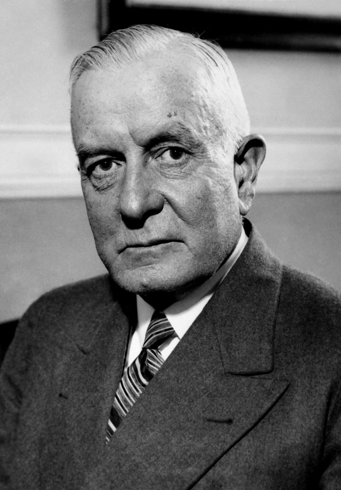

Thomas J. Watson was a pioneer in the development of accounting and computing equipment used today by business, government, science and industry. He built a worldwide industry during his 42 years at IBM. Mr. Watson was born in Campbell, N.Y., February 17, 1874. His first job was at age 18 as a bookkeeper in Clarence Risley's Market in Painted Post, N.Y. Later he sold sewing machines and musical instruments before joining the National Cash Register Company as a salesman in Buffalo. He eventually worked his way up to general sales manager. Bent on inspiring the dispirited NCR sales force, Mr. Watson introduced the motto, "THINK," which later became a widely known symbol of IBM.
| Name | Address | Roll no |
| Janak Gharti | Dillibazar | 12 |
| Roman | Banasthalli | 7 |
| Sangum | Putalisadak | 11 |